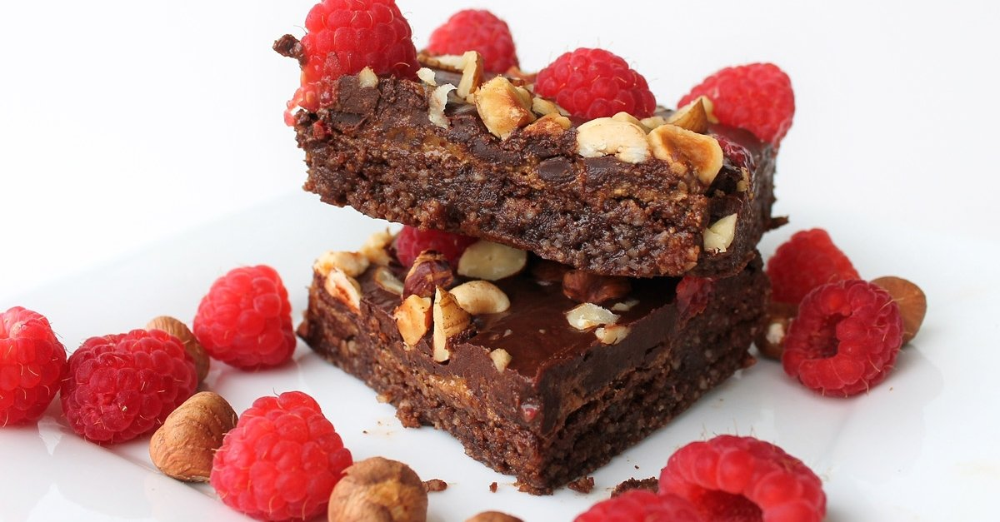

Gerekli Malzeme Listesi
- 240 gr bitter çikolata
- 180 gr tereyağı
- 2 tam yumurta ,2 yumurta sarısı
- 1 su bardağı şeker
- 2 yemek kaşığı kakao
- 3 yemek kaşığı un
- 1 paket vanilin
- 1 su bardağı kırmızı meyve(tercihe dayalı)
- 60 gr beyaz çikolata
Afiyet olsun !
